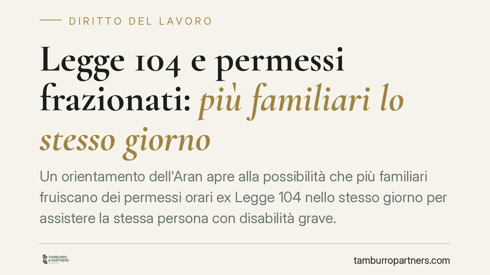
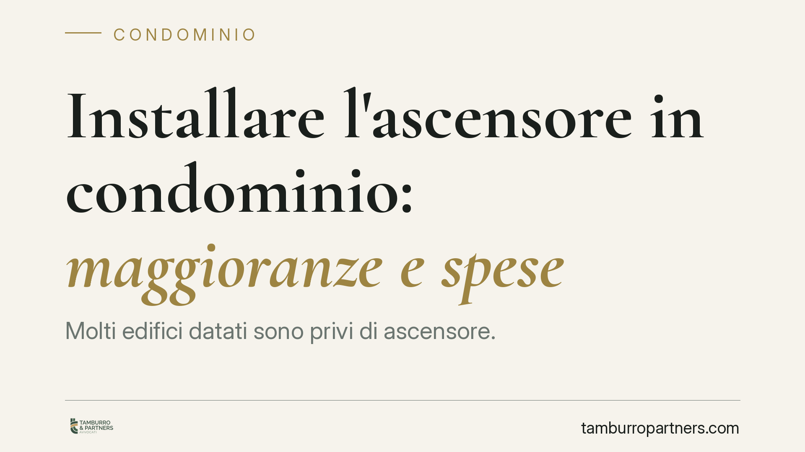
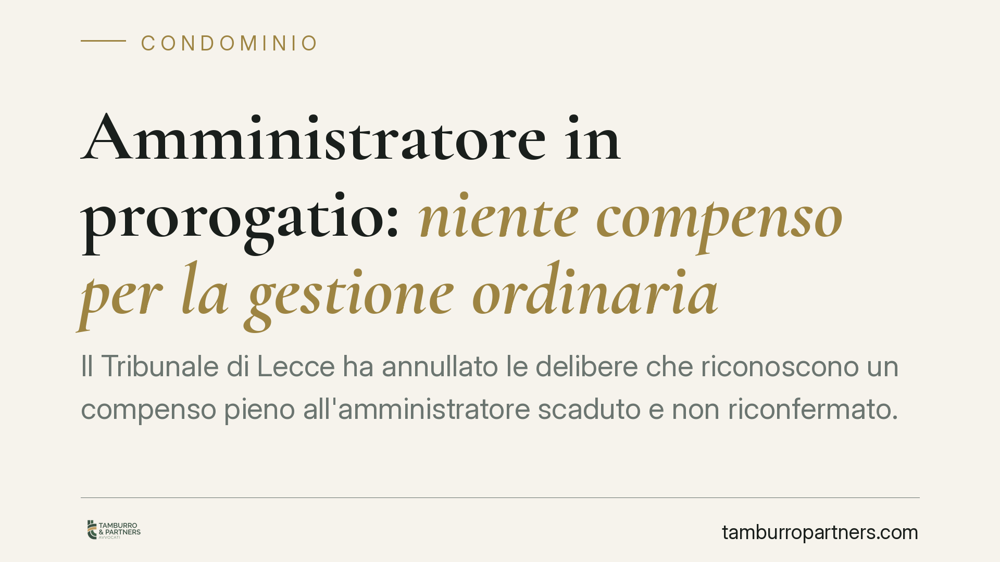
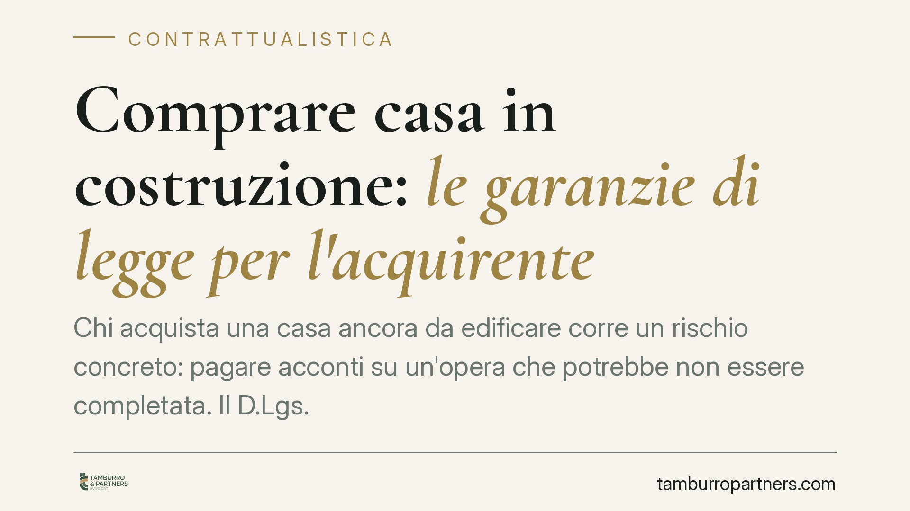
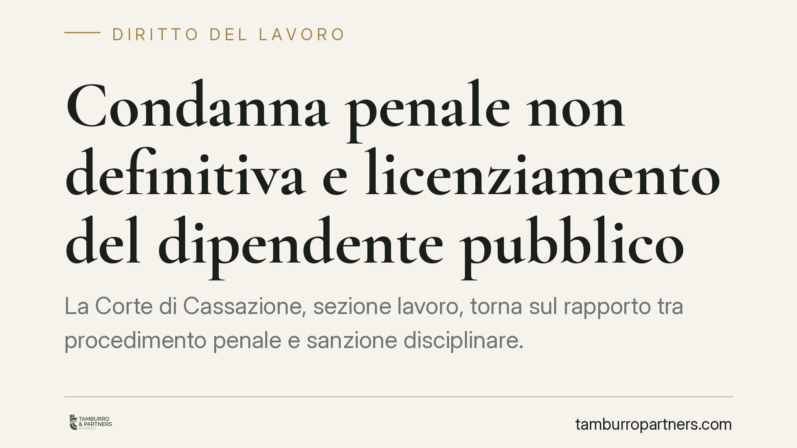
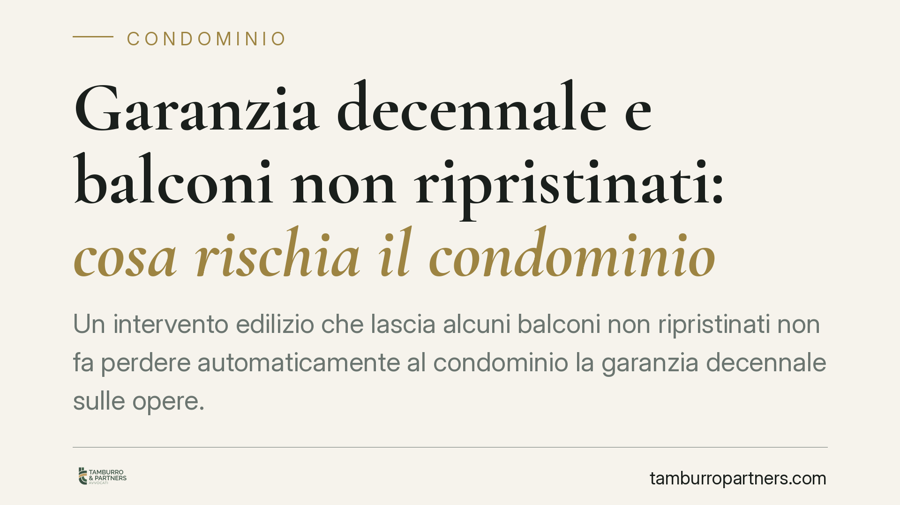
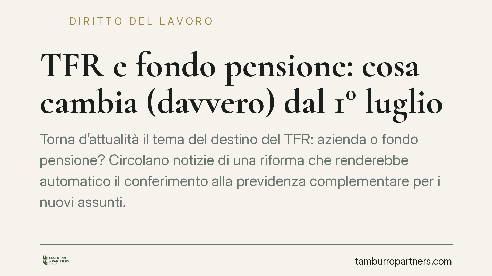
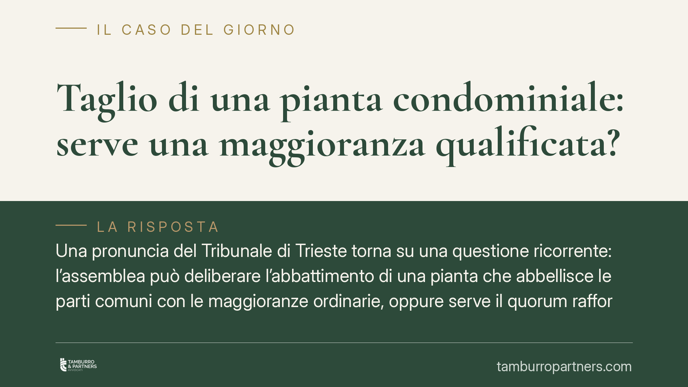
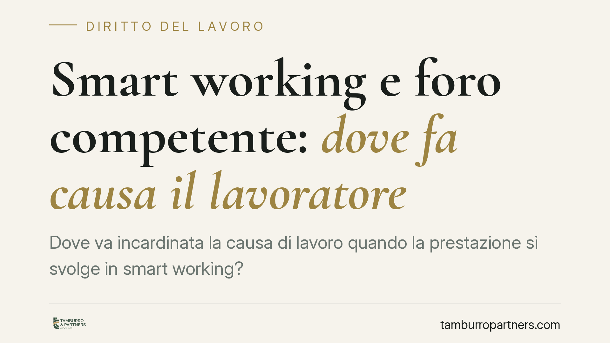
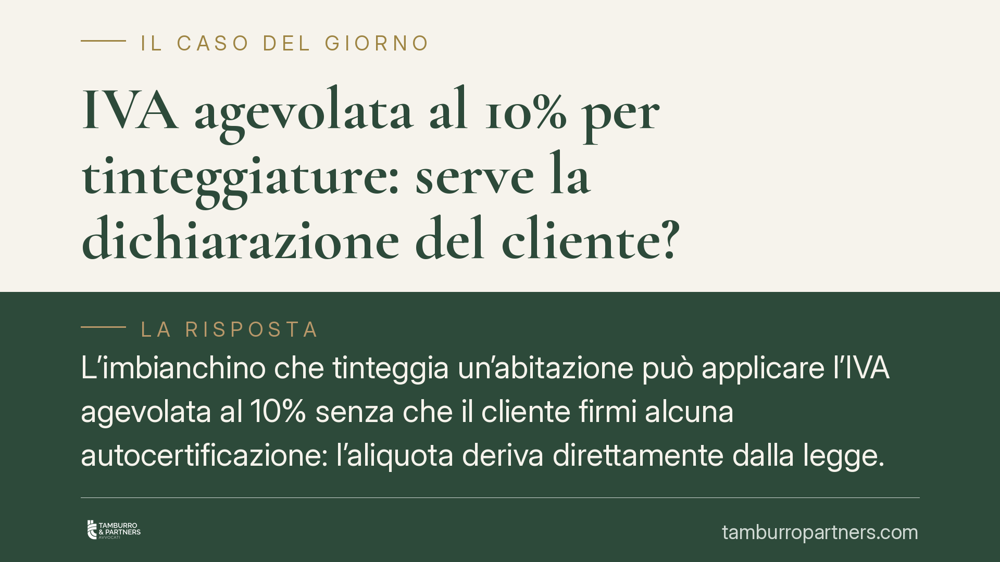

Ogni contributo verifica fonti primarie e indica cosa cambia per il destinatario. Mai marketing, mai pareri travestiti.
Un mutuo con interessi troppo alti può sfociare nell'usura. La Legge 108/1996 fissa soglie precise, aggiornate ogni trimestre, oltre le quali il tasso diventa illegale. Capire come…
Una recente pronuncia del Tribunale di Cremona affronta un nodo tornato al centro del contenzioso bancario: l'ammortamento alla francese, il regime di capitalizzazione e la determi…

Un orientamento dell'Aran apre alla possibilità che più familiari fruiscano dei permessi orari ex Legge 104 nello stesso giorno per assistere la stessa persona con disabilità grave…
Quando manca un contratto firmato, l'avvocato può comunque chiedere il proprio compenso? La questione non riguarda la validità dell'accordo, ma la sua prova. Il punto pratico è dup…
Un dipendente pubblico dimentica di barrare la casella della riserva di posti nella domanda di concorso. Quel titolo si perde per sempre? Una recente pronuncia del Consiglio di Sta…

Molti edifici datati sono privi di ascensore. Installarlo è possibile, ma la procedura cambia sensibilmente a seconda che l'opera serva ad abbattere barriere architettoniche o rapp…
Le cosiddette vendite solidali - prodotti o campagne che promettono una quota del ricavato a un fine benefico - finiscono sotto una lente più rigorosa. Non nasce una disciplina org…

Il Tribunale di Lecce ha annullato le delibere che riconoscono un compenso pieno all'amministratore scaduto e non riconfermato. Durante la cosiddetta prorogatio i suoi poteri si ri…
La precedenza riconosciuta ai docenti che assistono un familiare disabile non garantisce da sola la sede desiderata. La giurisprudenza di legittimità conferma che il diritto al rav…
Chi riceve prestazioni pensionistiche legate al reddito deve rispondere alle campagne di verifica reddituale dell'INPS. La mancata o tardiva risposta può comportare la sospensione …
La Corte di Cassazione ha ribadito che il lavoratore assente per depressione può svolgere attività sociali fuori casa senza incorrere automaticamente in un illecito. Ciò che conta …
Il trattamento di fine rapporto può essere aggredito dai creditori, ma la legge fissa limiti precisi a seconda che il TFR sia ancora presso il datore di lavoro o già accreditato su…

Chi acquista una casa ancora da edificare corre un rischio concreto: pagare acconti su un'opera che potrebbe non essere completata. Il D.Lgs. 122/2005 impone al costruttore garanzi…
La Corte di cassazione torna sul contratto di assicurazione contro gli infortuni e chiarisce un punto spesso frainteso: la somma assicurata indicata in polizza non è l'importo che …
Le ferie non sono un semplice bonus, ma un diritto irrinunciabile con scadenze precise. La legge fissa un limite minimo da godere entro l'anno e termini specifici per smaltire le g…
La precedenza prevista dalla Legge 104/1992 per i docenti che assistono un familiare disabile non garantisce un diritto assoluto al trasferimento nella provincia desiderata. Nella …
Il lavoratore colpito da un evento che ne compromette la capacità di intendere e volere rischia di lasciar decorrere i termini per impugnare il licenziamento. Il tema non è un fant…
Per riparare il tetto comune può essere necessario passare attraverso l'appartamento di un singolo condomino. Ma l'assemblea non può disporre liberamente delle proprietà esclusive:…

La Corte di Cassazione, sezione lavoro, torna sul rapporto tra procedimento penale e sanzione disciplinare. Una condanna non definitiva non basta, da sola, a legittimare il licenzi…
Il datore di lavoro che monitora smartphone o dispositivi aziendali oltre i limiti di legge espone il dipendente a una lesione della riservatezza. Non ogni controllo è vietato, ma …
L'agente immobiliare che non comunica la classe energetica dell'immobile espone se stesso a responsabilità. Ma il quadro va letto con precisione: un conto è l'obbligo del venditore…

Un intervento edilizio che lascia alcuni balconi non ripristinati non fa perdere automaticamente al condominio la garanzia decennale sulle opere. L'impresa può limitare la propria …
Quando il condominio abbandona il riscaldamento centralizzato, il locale che ospitava la caldaia perde la sua funzione originaria. Ma perde anche la natura di parte comune? La risp…

Torna d'attualità il tema del destino del TFR: azienda o fondo pensione? Circolano notizie di una riforma che renderebbe automatico il conferimento alla previdenza complementare pe…

Una pronuncia del Tribunale di Trieste torna su una questione ricorrente: l'assemblea può deliberare l'abbattimento di una pianta che abbellisce le parti comuni con le maggioranze …

Dove va incardinata la causa di lavoro quando la prestazione si svolge in smart working? Un recente orientamento della Corte di Cassazione, Sezione Lavoro, valorizza il luogo effet…
Molti assicurati leggono la somma indicata in polizza come il massimo ottenibile in caso di infortunio. Non sempre è così: quel valore può essere una base di calcolo, non un tetto.…

L'imbianchino che tinteggia un'abitazione può applicare l'IVA agevolata al 10% senza che il cliente firmi alcuna autocertificazione: l'aliquota deriva direttamente dalla legge. Tut…
L'iscrizione all'Albo dei dottori commercialisti impone limiti precisi ad altre attività. L'art. 4 del Dlgs 139/2005 individua le situazioni incompatibili con la professione, a tut…
Un bene consegnato in ritardo non basta, da solo, a fondare un risarcimento. La Cassazione ribadisce che chi lamenta il ritardo deve provare un danno concreto e direttamente colleg…